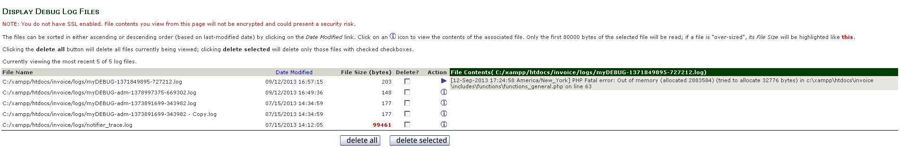

Display Log Files for Zen Cart v1.5.0, v1.5.1 and v1.5.2
Version 1.0.6 by lat9 & design75
Current Support Thread at Zen Cart Forums: http://www.zen-cart.com/showthread.php?204058-Display-Log-Files-Support-Thread
Version History:
- v1.0.0, 2012-12-22, Initial release.
- v1.0.1, 2013-01-05, Changed /YOUR_ADMIN/display_logs.php:
- BUGFIX: v1.5.0 DIR_FS_LOGS (or any other missing directory) resulted in white-screen-of-death
- Add usps*.log files; change notify*.log to notifier*.log
- v1.0.2, 2013-03-30, Changed /YOUR_ADMIN/display_logs.php:
- Added the file-size of the debuglog to the listing
- v1.0.3, 2013-09-12:
- Added missing constant to /YOUR_ADMIN/includes/languages/english/display_logs.php.
- Modifications to /YOUR_ADMIN/display_logs.php to account for large files. The notifier_trace.log file, for instance, can grow to be enormous if not flushed periodically.
- BUGFIX: $dir variable close/unset was in the wrong place (/YOUR_ADMIN/display_logs.php).
- BUGFIX: Needed to convert htmlentities in the loaded file to ensure that any present don't disrupt the file display.
- v1.0.4, 2013-12-06:
- BUGFIX: Unprintable characters result in blank display.
- BUGFIX: Refreshing page after file delete results in error.
- v1.0.5, 2014-01-20:
- BUGFIX: USPS shipping logs now start with SHIP_usps, not just usps.
- v1.0.6, 2014-02-28:
- BUGFIX: When this plugin was used in conjunction with the CSS Buttons for Admin plugin, the "Delete All" button no longer functioned.
What it does
There have been many times that I've taken a look in one of my Zen Cart's /logs (or /cache for Zen Cart v1.5.0) directories and found some debug log files that I wasn't previously aware of. This plugin allows an admin user to view (and selectively delete) any files with names that match:
- myDEBUG-*.log
- AIM_Debug_*.log
- SIM_Debug_*.log
- FirstData_Debug_*.log
- Linkpoint_Debug_*.log
- Paypal*.log
- paypal*.log
- ipn_*.log
- zcInstall*.log
- notifier*.log (v1.0.1 and later)
- usps*.log (v1.0.1 and later)
- SHIP_usps*.log (v1.0.5 and later)
The plugin searches only in these directories for the matching log-files:
- /cache
- /logs
- /includes/modules/payment/paypal/logs
Once installed (see below), the plugin can be accessed by a signed-in and authorized admin user by selecting Tools->Display Log Files.
Note: Due to the potentially sensitive nature of the information contained in some of the log files, I suggest that you run your admin in SSL mode if you use this plugin.
Due the the number of files that can accumulate, only the most recent 20 are displayed by default. If you want to display more files at a time, edit the file /YOUR_ADMIN/display_logs.php and change line 23:
define('MAX_LOG_FILES_TO_VIEW', 20);
In addition, starting with v1.0.3, there's an additional constant (on line 24) that specifies the maximum number of bytes per file to read. Some of the log files can get very large and cause this plugin to generate a debug-log due to an out-of-memory condition!
if (!defined('MAX_LOG_FILE_READ_SIZE')) define('MAX_LOG_FILE_READ_SIZE', 80000); /*v1.0.3a*/
The tool allows the logged-in (and authorized) admin user to:
- Sort the log files, either ascendingly or descendingly, by last-modified/creation date.
- Select (via checkbox) and then delete only the log files selected.
- Delete all log files currently being viewed.
- View the contents of an individual log file.
The initial screen for the tool looks similar to:

Installation
There are no core-file overwrites in this plugin; you should always backup your cart’s database and files prior to making any changes. Unzip the plugin's package file, rename the YOUR_ADMIN folder to match your custom admin folder's name and then copy the contents of that admin folder to your store's installation:
- /YOUR_ADMIN/display_logs.php
- /YOUR_ADMIN/includes/extra_datafiles/display_logs_filenames.php
- /YOUR_ADMIN/includes/languages/english/display_logs.php
- /YOUR_ADMIN/includes/languages/english/extra_definitions/display_logs_name.php
- /YOUR_ADMIN/includes/languages/english/images/buttons/button_delete_all.gif
- /YOUR_ADMIN/includes/languages/english/images/buttons/button_delete_selected.gif
Uninstall
First, delete the files that were copied to your zen-cart installation's admin directories then use your admin's Tools->Run SQL Patches to run the file display_logs_uninstall.sql.